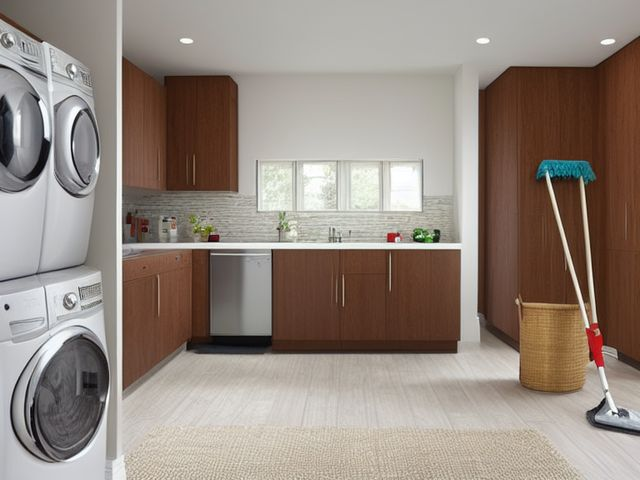

Laundry Room micro zone
The Utility and Cleaning Zone
Hold the tools that keep this room and the strip of floor in front of the machines clean, dry and ready.
One session: 30-45 min. most of it in Straighten, getting handles off the floor and onto the wall

What done looks like
Broom, mop and dustpan hanging heads up with painted outlines showing behind each one, a single labeled caddy holding every vacuum attachment, a mop head that is dry to the touch, and the bucket sitting inside its taped floor square with nothing stored inside it.
Check these before you start
- Fall, cut, or crushLong handled tools leaned against a wall or stored behind a door, ready to swing down at head height when the door moves.
- Poison, choke, or strangleDrain cleaner and bleach kept at floor level next to the mop bucket, where they get knocked, decanted, or mixed during a rinse.
What to have on hand before you start
These are types of thing, not brands. If you already own something that does the job, that is the right one to use. Each says which pass needs it and what to watch out for.
- Color-coded microfiber cloth set ×12
Wipe, dust, and dry surfaces, in the Shine pass.
Wash by use color; avoid fabric softener. - Neutral pH multi-surface cleaner
Routine cleaning of sealed surfaces, in the Shine and Sustain passes.
Verify surface compatibility; lock around children and pets. - Compact vacuum with attachments
Remove dust, crumbs, and debris, in the Shine pass.
Use appropriate attachment. - Keep, Relocate, Donate, Recycle, Trash container set ×5
Support rapid item routing during Sort, in the Sort pass.
Do not block exits. - Portable cleaning caddy
Transport and contain cleaning inputs, in the Straighten, Shine and Sustain passes.
Secure chemicals from children and pets. - Portable label maker
Create durable standardized labels, in the Standardize and Sustain passes.
Follow surface and adhesive guidance. - Removable write-on labels
Create temporary or adjustable visual controls, in the Standardize pass.
Test on delicate finishes.
Only if your cleaning supplies has one: 6 more
Not every cleaning supplies needs these. Each one is here because some do, and the reason is next to it.
- Single-Tier Slide-Out Organizer
Provide pull-out access in low or narrow cabinets, in the Straighten, Standardize and Sustain passes.
Do not overload; anchor wall-mounted or tall systems where required. - Leak Tray
Protect cabinets and expose plumbing leaks, in the Straighten, Standardize and Sustain passes.
Do not overload; anchor wall-mounted or tall systems where required. - Medium Clear Lidded Bin ×4
Contain medium items on shelves or in closets, in the Straighten, Standardize and Sustain passes.
Do not overload; anchor wall-mounted or tall systems where required. - Floor Boundary Tape
Define no-storage and equipment boundaries, in the Safety and Standardize passes.
Install and use according to product instructions. - Min-Max Inventory Label
Control replenishment and backstock, in the Standardize and Sustain passes.
Install and use according to product instructions. - Floor-material-compatible cleaner
Clean sealed hard floors, in the Shine and Sustain passes.
Match cleaner to floor material.
The six passes, in order
Work them in this order. Sorting after you have arranged things means arranging things you were about to remove.
Sort
Decide what stays. Everything else leaves the zone now.
Stand every tool up in the open: the broom, the mop, the dustpan, the vacuum hose and its attachments, the sack of rags. Two brooms become one broom. The crevice tool that fits no vacuum you still own goes out today.
Straighten
Give what stays a home, placed where the hand actually reaches.
Hang the broom, mop and dustpan on a wall rail with the heads uppermost and clear of the floor, because bristles resting on concrete splay and then re-soil the floor they touch. Vacuum attachments live in one labeled caddy, so a missing one is visible rather than assumed.
Shine
Clean it, and use the cleaning to inspect what you cannot see when it is full.
Rinse the mop head and hang it to dry before it goes back on the rail, and empty the vacuum canister before you store it. A mop put away wet and grey spreads that water back down the next floor it touches.
Surface by surface, all 7 of them, with what to use on each.
Safety
Make the zone safe for everybody who uses it, including the shortest person.
A broom handle leaned against the wall behind a door swings and falls at head height the moment the door opens. Everything is hung or in a bin, nothing leans. Drain cleaner and bleach in this corner sit on a shelf above the mop bucket, never inside it where a rinse could mix them.
Standardize
Write down the best way you know today, so it survives you forgetting.
Paint or tape an outline behind each hook so a missing tool shows from the doorway, and give the bucket a taped square of floor that belongs to it alone. The room then reports its own state without anyone opening a cupboard.
Sustain
Attach the reset to something that already happens, so it keeps itself.
When you clear the lint screen at the end of a wash day, sweep the strip of floor in front of the machines with the broom that is already hanging an arm's length away.
The rag pile
Worn towels, holed T-shirts and a retired set of sheets have quietly become a rag supply large enough to clean a small hotel. It grows because turning a worn item into a rag feels like thrift rather than a decision, so nothing is ever really discarded, only reclassified. The rule: rags live in one bin and only one bin, and nothing new becomes a rag until something old leaves as waste. If you cannot work through one bin of rags in a year, you are not saving cloth, you are storing it in the room with the least spare space. The same rule settles the second vacuum you are keeping for the garage: if it has not run in a year, it is not a spare, it is a broken machine with an excuse.
Cleaning it properly, surface by surface
The tools that clean the room have to be clean and dry themselves. Rinse the mop, empty the vacuum, and put nothing back wet or grey.
Work down, not across. Whatever comes off a high surface lands on the one below it, so cleaning the floor first means cleaning it twice.
Carry these in with you. Compact vacuum with attachments; Color-coded microfiber cloth set; Neutral pH multi-surface cleaner; Portable cleaning caddy; Floor-material-compatible cleaner.
- The hanging broom and dustpan
Take each off its hook. Knock the broom out over the bin, then pull the wound hair and lint off the dustpan lip and its brush. Wipe both handles down where hands leave grime, and hang them heads up again. - The wall hooks and the painted outlines behind them
Wipe the hooks and the outlined wall with a damp cloth so the painted shapes stay crisp and you can still see at a glance what is missing. - The caddy of vacuum attachments
Tip the attachments out, clear the hair wound around the brush tool and the crevice nozzle, wipe each one, and empty the vacuum canister before the caddy goes back. - The mop head
Rinse it until the water runs clear, wring it hard, and hang it to dry before it returns to the rail, so it does not spread grey water down the next floor it touches. - The bucket and its taped floor square
Rinse and dry the bucket inside and out, wipe the taped outline on the floor so its edges still read, and set the bucket back empty inside the square. - The chemical shelf above the bucket
Wipe the bottle exteriors and the shelf where drain cleaner and bleach weep, keeping the cloth off the labels so they stay readable. - The floor of the corner
Vacuum the dust and lint from the corner, then mop it with the floor-material-compatible cleaner.
Inspect as you clean. Cleaning is the only time you see the zone empty, so use it.
- A mop head still slimy or sour after rinsing, or a broom head shedding its bristles. Flag them.
- A cracked bucket, a split broom or mop handle, or a dustpan edge gone rusty. Note it.
- The vacuum cord scuffed or stiff near the plug, or a canister seal that no longer closes cleanly. Flag it.
- A weeping drain cleaner or bleach bottle, and the shelf bracket beneath it corroding or loosening under the weight. Note it.
The standard that keeps it fixed
Nothing leans, nothing stores wet, and every hook has an outline behind it.
Reset trigger. when you clear the lint screen at the end of a wash day
The rest of the laundry room, in working order
Each of these is one session on its own. Finish this zone before you open the next.
- The Washer and Dryer
- The Detergent and Treatment Zone
- The Sorting and Hamper Zone
- The Folding Surface
- The Hanging and Air-Dry Zone
- The Utility and Cleaning Zone, you are here
The Laundry Room in full, with what each of the 6 zones is for
The same zone in another room
The laundry room is not the only room in this house with this zone. They do not do the same job, which is why each has its own page rather than one page pretending the rooms are interchangeable.
Related reading
- What is 6S?
- This zone's safety pass, in full
- Is one spot in this zone always the one you skip?
- Why this zone gets messy again
- Decluttering vs. organizing
- Before you buy storage for this zone
- Still does not fit, even after the honest count?
- Does something in this zone actually get used somewhere else?
- Stuck on one item in this zone?
- Written the standard, but nobody else follows it?
- Does everyone in the house agree what "done" looks like here?
- Does more than one person use this zone?
- Found a duplicate of something in this zone?
- Why the standard above names one home per category
- Is the everyday item in this zone actually the easy one to reach?
- Not sure whether to keep something in this zone?
- Does this zone keep running out of something?
- Started this zone and stalled partway through?
- Have you stopped noticing the clutter in this zone?
When you want it off the screen
Carry The Utility and Cleaning Zone into the room
The method above is complete and free. The Whole House Print Pack puts The Utility and Cleaning Zone and the other 113 micro zones on 684 printable cards, so the steps you just read are not stuck behind a phone screen while your hands are full.
The Print Pack, 19 dollarsJust this zone, 4 dollarsOr draw a card free
The Utility and Cleaning Zone on its own is 4 dollars for 6 cards. All 114 micro zones is 19 dollars for 684. The whole house is the better buy; the single zone is here so you can take only what you are working on.
If The Utility and Cleaning Zone keeps fighting back, the real problem usually sits somewhere else in the room. A one hour virtual consult is 250 dollars: we find the function, the friction and the root cause together, and you keep a written standard for the space. See what a consult covers.